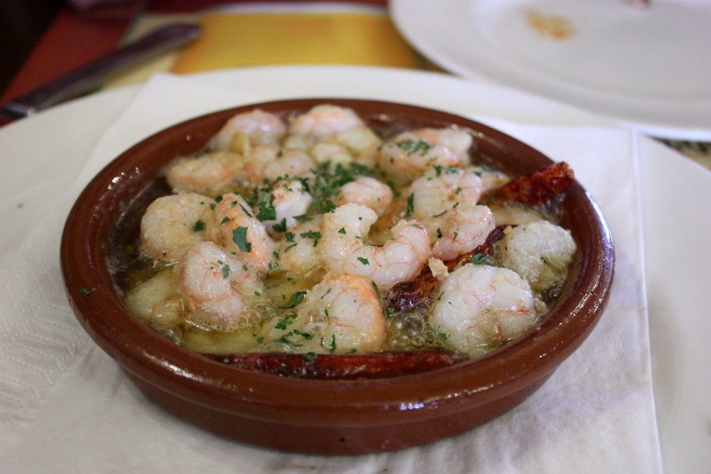

GAMBAS AL AJILLO

Gambas al ajillo are on every Spanish restaurant menu — for good reason! It's a dish of shrimp cloaked in garlic-infused olive oil with smoky hints of paprika and a touch of sweetness from sherry.
Ingredients
- 1 pound frozen large shrimp (21-25 count) - thawed, peeled, and deveined
- 1 teaspoon hot smoked paprika (Optional)
- kosher salt to taste
- 4 cloves garlic
- ¼ cup extra-virgin olive oil
- 2 tablespoons dry sherry
- 1 tablespoon chopped Italian flat-leaf parsley
Instructions
- Place shrimp in a large bowl and season with paprika and kosher salt; mix well to coat.
- Slice garlic into thin slices. Heat oil in a skillet over medium heat; add garlic and cook until golden, about 2 minutes. Add shrimp and increase heat to high. Toss and turn shrimp with tongs until starting to curl but still undercooked, about 2 minutes. Pour in sherry. Cook, stirring continuously, until sauce comes up to a boil and shrimp is cooked through, about 1 minute more. Remove from heat. Stir in parsley.